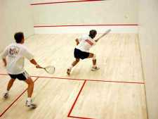

Kirkcaldy Squash Club is the place to play squash in Kirkcaldy, our two courts being host to players with skill levels from absolute beginners to experienced so-and-sos...
We have a number of teams, playing in Fife and Lothian leagues, and always welcome players interested in competitive squash. If you'd rather a less serious game then you're also in luck, as we encourage friendly games between players, and run an internal ladder to encourage play.
if you've never played before and want to give it a try then you're in luck, as we have a number of players who can give you advice and tips to get you up and (literally) running immediately. Plus we're running a membership promotion at the moment - £30 for the remaining 8 months in the current season. This may be even cheaper depending on your situation! Have a look at the joining page for more information.